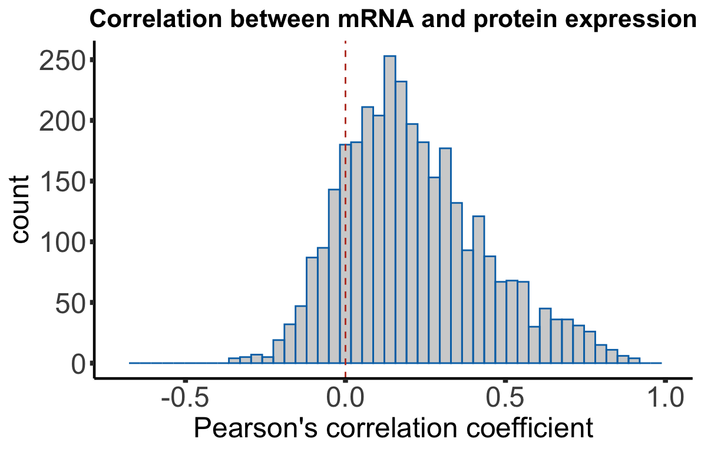
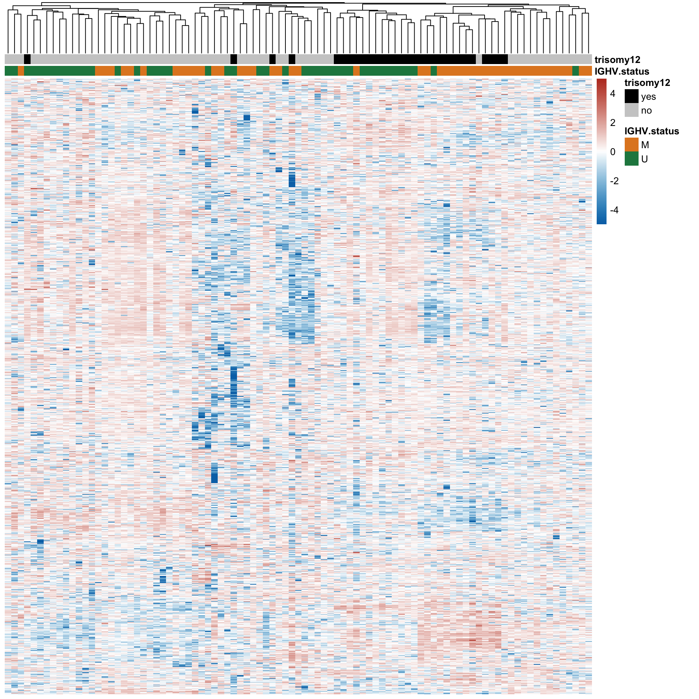
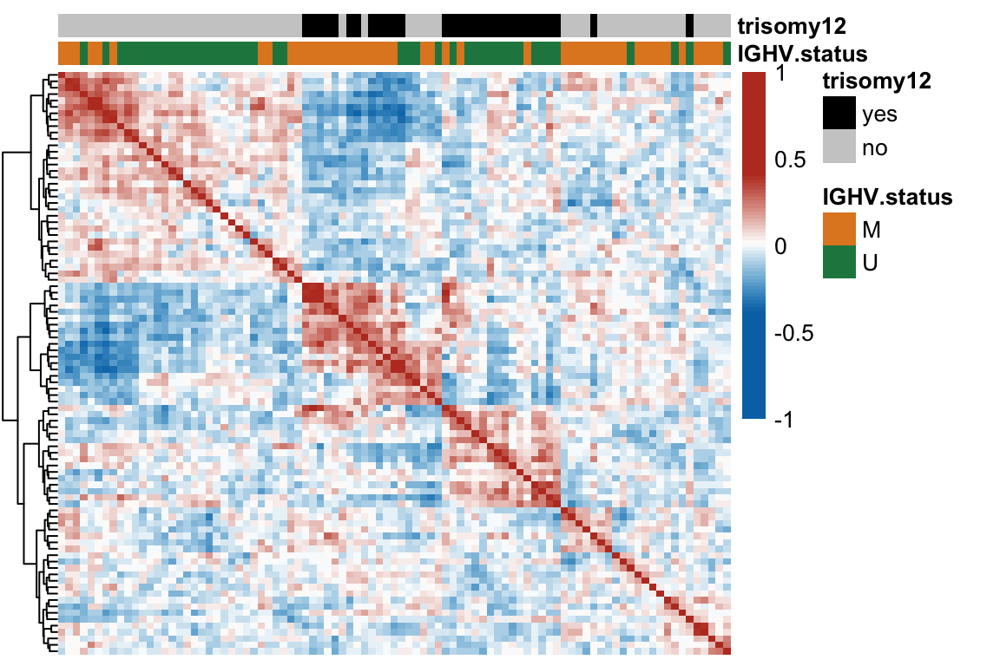

Section 1: Overview of CLL proteomic dataset
Junyan Lu
2020-10-09
Last updated: 2021-05-05
Checks: 5 2
Knit directory: CLLproteomics_publish_revision/analysis/
This reproducible R Markdown analysis was created with workflowr (version 1.6.2). The Checks tab describes the reproducibility checks that were applied when the results were created. The Past versions tab lists the development history.
The R Markdown is untracked by Git. To know which version of the R Markdown file created these results, you’ll want to first commit it to the Git repo. If you’re still working on the analysis, you can ignore this warning. When you’re finished, you can run wflow_publish to commit the R Markdown file and build the HTML.
Great job! The global environment was empty. Objects defined in the global environment can affect the analysis in your R Markdown file in unknown ways. For reproduciblity it’s best to always run the code in an empty environment.
The command set.seed(20200227) was run prior to running the code in the R Markdown file. Setting a seed ensures that any results that rely on randomness, e.g. subsampling or permutations, are reproducible.
Great job! Recording the operating system, R version, and package versions is critical for reproducibility.
- unnamed-chunk-14
- unnamed-chunk-15
To ensure reproducibility of the results, delete the cache directory manuscript_S1_Overview_cache and re-run the analysis. To have workflowr automatically delete the cache directory prior to building the file, set delete_cache = TRUE when running wflow_build() or wflow_publish().
Great job! Using relative paths to the files within your workflowr project makes it easier to run your code on other machines.
Great! You are using Git for version control. Tracking code development and connecting the code version to the results is critical for reproducibility.
The results in this page were generated with repository version 3fb50c5. See the Past versions tab to see a history of the changes made to the R Markdown and HTML files.
Note that you need to be careful to ensure that all relevant files for the analysis have been committed to Git prior to generating the results (you can use wflow_publish or wflow_git_commit). workflowr only checks the R Markdown file, but you know if there are other scripts or data files that it depends on. Below is the status of the Git repository when the results were generated:
Ignored files:
Ignored: .DS_Store
Ignored: .Rhistory
Ignored: .Rproj.user/
Ignored: analysis/.DS_Store
Ignored: analysis/.Rhistory
Ignored: analysis/manuscript_S1_Overview_cache/
Ignored: code/.DS_Store
Ignored: code/.Rhistory
Ignored: data/.DS_Store
Ignored: output/.DS_Store
Untracked files:
Untracked: analysis/.trisomy12_norm.pdf
Untracked: analysis/cohortComposition_all.pdf
Untracked: analysis/manuscript_S1_Overview.Rmd
Untracked: analysis/manuscript_S2_genomicAssociation.Rmd
Untracked: analysis/manuscript_S3_trisomy12.Rmd
Untracked: analysis/manuscript_S4_trisomy19.Rmd
Untracked: analysis/manuscript_S5_IGHV.Rmd
Untracked: analysis/manuscript_S6_del11q.Rmd
Untracked: analysis/manuscript_S7_SF3B1.Rmd
Untracked: analysis/manuscript_S8_drugResponse_Outcomes.Rmd
Untracked: analysis/manuscript_S9_STAT2.Rmd
Untracked: analysis/plot_PC1_PC2.pdf
Untracked: analysis/timsTOF_validate.Rmd
Untracked: code/utils.R
Untracked: data/Annotation file March 2021.xlsx
Untracked: data/CAS9results.xlsx
Untracked: data/CNV_onChrom.RData
Untracked: data/ComplexParticipantsPubMedIdentifiers_human.txt
Untracked: data/Fig1A.png
Untracked: data/IGLV321_SupplementalTables_R2.xlsx
Untracked: data/MOFAout.RData
Untracked: data/MOFAout_atLeast3.RData
Untracked: data/STATexprPCR.xlsx
Untracked: data/Western_blot_results_20210309_short.csv
Untracked: data/Western_blot_results_separate_blots.xlsx
Untracked: data/allComplexes.txt
Untracked: data/ddsrna_enc.RData
Untracked: data/exprCNV_enc.RData
Untracked: data/geneAnno.RData
Untracked: data/gmts/
Untracked: data/ic50.RData
Untracked: data/mofaIn.RData
Untracked: data/mofaIn_atLeast3.RData
Untracked: data/patMeta_enc.RData
Untracked: data/pepCLL_lumos_enc.RData
Untracked: data/protMOFA.RData
Untracked: data/proteins_in_complexes
Untracked: data/proteomic_LUMOS_2pep_enc.RData
Untracked: data/proteomic_explore_enc.RData
Untracked: data/proteomic_independent_all_enc.RData
Untracked: data/proteomic_independent_enc.RData
Untracked: data/proteomic_timsTOF_enc.RData
Untracked: data/screenData_enc.RData
Untracked: data/setToPathway.txt
Untracked: data/survival_enc.RData
Untracked: output/MSH6_splicing.svg
Untracked: output/SUGP1_splicing.svg
Untracked: output/deResList.RData
Untracked: output/deResListBatch2.RData
Untracked: output/deResListRNA.RData
Untracked: output/deResListRNA_allGene.RData
Untracked: output/deResList_WBC.RData
Untracked: output/deResList_batch1.RData
Untracked: output/deResList_batch3.RData
Untracked: output/deResList_independent.RData
Untracked: output/deResList_timsTOF.RData
Untracked: output/dxdCLL.RData
Untracked: output/dxdCLL2.RData
Untracked: output/exprCNV.RData
Untracked: output/geneAnno.RData
Untracked: output/int_pairs.csv
Untracked: output/lassoResults_CPS.RData
Untracked: output/resOutcome_batch1.RData
Untracked: output/resOutcome_batch13.RData
Untracked: output/resOutcome_batch2.RData
Untracked: output/resOutcome_batch3.RData
Unstaged changes:
Modified: analysis/_site.yml
Deleted: analysis/analysisSF3B1.Rmd
Deleted: analysis/comparePlatforms.Rmd
Deleted: analysis/compareProteomicsRNAseq.Rmd
Deleted: analysis/correlateCLLPD.Rmd
Deleted: analysis/correlateGenomic.Rmd
Deleted: analysis/correlateGenomic_removePC.Rmd
Deleted: analysis/correlateMIR.Rmd
Deleted: analysis/correlateMethylationCluster.Rmd
Modified: analysis/index.Rmd
Deleted: analysis/predictOutcome.Rmd
Deleted: analysis/processProteomics_LUMOS.Rmd
Deleted: analysis/processProteomics_timsTOF.Rmd
Deleted: analysis/qualityControl_LUMOS.Rmd
Deleted: analysis/qualityControl_timsTOF.Rmd
Note that any generated files, e.g. HTML, png, CSS, etc., are not included in this status report because it is ok for generated content to have uncommitted changes.
There are no past versions. Publish this analysis with wflow_publish() to start tracking its development.
Load packages and datasets
library(limma)
library(DESeq2)
library(cowplot)
library(proDA)
library(pheatmap)
library(SummarizedExperiment)
library(tidyverse)
#load datasets
load("../data/patMeta_enc.RData")
load("../data/ddsrna_enc.RData")
load("../data/proteomic_explore_enc.RData")
source("../code/utils.R")
knitr::opts_chunk$set(echo = TRUE, warning = FALSE, message = FALSE, dev = c("png","pdf"))Overview of the patient characteristics in our study cohort
A table shown the clinical characteristics
(all cohorts combined)
labelBatch <- c(batch1 = "batch1", batch2 = "batch3", batch3 = "batch2")
patInfo <- sampleTab %>%
filter(!lowQuality, !duplicatedPat) %>%
select(encID, leukCount, cohort,batch) %>%
mutate(batch = labelBatch[batch]) %>%
arrange(batch, encID) %>%
left_join(select(patMeta, Patient.ID, IGHV.status, trisomy12), by = c(encID = "Patient.ID")) %>%
left_join(select(survT, patID, OS, died, TTT, treatedAfter, TTT, age, sex, pretreat), by = c(encID = "patID")) %>%
mutate(`No.` = seq(nrow(.))) %>%
select(No., encID, age, sex, IGHV.status, trisomy12, leukCount, OS, died, TTT, treatedAfter, pretreat, cohort, batch)
patInfoTab <- patInfo %>% #format
mutate(trisomy12 = ifelse(trisomy12 %in% "1", "yes", "no"),
died = ifelse(is.na(OS),NA, ifelse(died,"yes","no")),
treatedAfter = ifelse(is.na(TTT), NA, ifelse(treatedAfter, "yes","no")),
pretreat = ifelse(pretreat %in% 1, "yes","no"),
age = as.integer(age),
OS = formatC(OS, digits=1),
TTT = formatC(TTT, digits=1)) %>%
mutate_all(replace_na,"NA") %>%
#arrange(cohort, encID) %>%
dplyr::rename(ID = encID,
IGHV = IGHV.status,
`WBC count` = leukCount,
`Survival time (years)` = OS,
Died = died,
`Time to treatment (years)` = TTT,
`Treatment after sampling` = treatedAfter,
`Treatment before sampling` = pretreat)
patInfoTab %>% DT::datatable()Prepare summary matrix for genomics
Get mutations with at least 5 cases
geneMat <- patMeta[match(patInfo$encID, patMeta$Patient.ID),] %>%
select(-Methylation_Cluster) %>%
mutate(IGHV.status = ifelse(!is.na(IGHV.status), ifelse(IGHV.status == "M",1,0),NA)) %>%
mutate(cohort = sampleTab[match(Patient.ID, sampleTab$encID),]$cohort) %>%
mutate(cohort = ifelse(cohort == "exploration",1,0)) %>%
mutate_if(is.factor, as.character) %>%
mutate_at(vars(-Patient.ID), as.numeric) %>% #assign a few unknown mutated cases to wildtype
data.frame() %>% column_to_rownames("Patient.ID")
geneMat <- geneMat[,apply(geneMat,2, function(x) sum(x %in% 1, na.rm = TRUE))>=5]#Remove some dubious annotations
geneMat <- geneMat[,!colnames(geneMat) %in% c("del5IgH","gain2p","IgH_break")]
useGeneForComposition <- colnames(geneMat)
useGeneForComposition <- unique(c(useGeneForComposition,"U1","cohort","IGHV.status"))
geneMat <- geneMat[,useGeneForComposition]Plot to summarise genomic background
Separate CNV table and mutation table
cnvCol <- colnames(geneMat)[grepl("del|trisomy|IGHV|cohort",colnames(geneMat))]
cnvMat <- geneMat[,cnvCol]
mutMat <- geneMat[,!colnames(geneMat) %in% cnvCol]
cnvMat <- cnvMat[,names(sort(colSums(cnvMat == 1,na.rm=TRUE)))]
#Manually assign CNV feature order for better visualization
cnvMat <- cnvMat[,c("del17p","del11q","del13q","trisomy19","trisomy12","IGHV.status","cohort")]
mutMat <- mutMat[,names(sort(colSums(mutMat == 1, na.rm=TRUE)))]
geneMat <- cbind(mutMat,cnvMat)
geneMat[is.na(geneMat)] <- -1sortTab <- function(sumTab) {
i <- ncol(sumTab)
#print(i)
if (i == 1) {
return(rownames(sumTab)[order(sumTab[,i])])
}
allLevel <- sort(unique(sumTab[,i]))
orderRow <- lapply(allLevel, function(n) {
sortTab(sumTab[sumTab[,i] %in% n, seq(1,i-1), drop = FALSE])
}) %>% unlist() %>% c()
return(orderRow)
}
sortedPat <- rev(sortTab(geneMat))
geneMat <- geneMat[,!colnames(geneMat) %in% c("IGHV.status","cohort")]plotTab <- geneMat %>% as_tibble(rownames="patID") %>% mutate_all(as.character) %>%
pivot_longer(-patID, names_to = "var", values_to = "value") %>%
mutate(status = case_when(
value == -1 ~ "NA",
value == 0 ~ "WT",
value == 1 & var %in% cnvCol ~ "CNA",
value == 1 & !var %in% cnvCol ~ "gene mutation"
)) %>%
mutate(var = factor(var, levels = c(colnames(mutMat),colnames(cnvMat))),
patID = factor(patID, levels = sortedPat),
status = factor(status, levels =c("WT","CNA","gene mutation","NA")))
# get number of mutations
sumMutTab <- group_by(plotTab, var) %>%
summarise(num=sum(value %in% 1))
formatedName <- lapply(levels(plotTab$var), function(n) {
num <- filter(sumMutTab, var == n)$num
if(n %in% cnvCol) {
nameCNV <- c(del17p = "del(17)(p13)", del11q = "del(11)(q22.3)", del13q = "del(13)(q14)")
if (n %in% names(nameCNV)) {
n <- nameCNV[n]
}
sprintf("%s [%s]",n, num)
} else {
bquote(italic(.(n))~"["*.(num)*"]")
}
})pMain <- ggplot(plotTab, aes(x=patID, y = var, fill = status)) +
geom_tile(color = "grey80") +
theme_void() +
scale_fill_manual(values = c("gene mutation" = colList[5],
"CNA"= colList[4],
"WT" ="white",
"NA" = "grey80"),
name = "aberrations") +
scale_y_discrete(labels = formatedName) +
theme(axis.text.x = element_blank(),
axis.text.y = element_text(size=11, face = "bold", hjust = 1),
axis.ticks.length.y = unit(0.05,"npc")) +
ylab("") + xlab("")Column annotations for other characteristics
Cohort
cohortTab <- select(patInfo, encID, cohort) %>%
mutate(patID = encID, status = cohort, type = "cohort") %>%
mutate(status = ifelse(status == "exploration","main","additional")) %>%
mutate(status = factor(status, levels = c("main","additional"))) %>%
filter(patID %in% sortedPat) %>%
mutate(patID = factor(patID, levels = sortedPat)) %>%
select(patID, type, status)
pCohort <- ggplot(cohortTab, aes(x=patID, y = type, fill = status)) +
geom_tile(color = NA) +
theme_void() + xlab("") + ylab("") +
coord_cartesian(expand = FALSE) +
scale_fill_manual(values = c(main=colList[3],additional = colList[2]), name = "cohort") +
theme(axis.text.y = element_text(face = "bold", size=11),
axis.ticks.length.y = unit(0.05,"npc"))IGHV status
ighvTab <- select(patMeta, Patient.ID, IGHV.status) %>%
mutate(patID = Patient.ID, status = IGHV.status, type = "IGHV") %>%
filter(patID %in% sortedPat) %>%
mutate(patID = factor(patID, levels = sortedPat)) %>%
select(patID, type, status) %>%
mutate(status = ifelse(is.na(status),"NA",status)) %>%
mutate(status = factor(status, levels = c("M","U","NA")))
pIGHV <- ggplot(ighvTab, aes(x=patID, y = type, fill = status)) +
geom_tile(color = NA) +
theme_void() + xlab("") + ylab("") +
coord_cartesian(expand = FALSE) +
scale_fill_manual(values = c(M="black",U="white","NA" = "grey80"), name = "IGHV") +
theme(axis.text.y = element_text(face = "bold", size=11),
axis.ticks.length.y = unit(0.05,"npc"))
#pIGHVSex
sexTab <- select(survT, patID, sex) %>%
mutate(status = as.character(sex), type = "sex") %>%
filter(patID %in% sortedPat) %>%
mutate(patID = factor(patID, levels = sortedPat),
status = case_when(status %in% "m" ~ "male",
status %in% "f" ~ "female")) %>%
select(patID, type, status)
pSex <- ggplot(sexTab, aes(x=patID, y = type, fill = status)) +
geom_tile(color = NA) +
theme_void() + xlab("") + ylab("") +
coord_cartesian(expand = FALSE) +
scale_fill_manual(values = c(male=colList[7],female=colList[5]), name = "sex") +
theme(axis.text.y = element_text(face = "bold",size=11),
axis.ticks.length.y = unit(0.05,"npc"))
#pSexAge
agePlotTab <- survT %>% filter(patID %in% sortedPat) %>%
select(patID, age) %>%
mutate( status = age, type = "age") %>%
mutate(patID = factor(patID, levels = sortedPat)) %>%
select(patID, type, status)
pAge <- ggplot(agePlotTab, aes(x=patID, y = type, fill = status)) +
geom_tile(color = NA) +
theme_void() + xlab("") + ylab("") +
coord_cartesian(expand = FALSE) +
scale_fill_viridis_b(name = "age") +
theme(axis.text.y = element_text(face = "bold",size=11),
axis.ticks.length.y = unit(0.05,"npc"))
#pAgeGenerate combined summarisation plots
Main plot
lMain <- get_legend(pMain + geom_tile(color = "black") )
lAge <- get_legend(pAge + geom_tile(color = "black") )
lSex <- get_legend(pSex+ geom_tile(color = "black") )
lIGHV <- get_legend(pIGHV+ geom_tile(color = "black") )
lCohort <- get_legend(pCohort + geom_tile(color = "black"))
noLegend <- theme(legend.position = "none")
mainPlot <- plot_grid(pAge + noLegend, pSex + noLegend,
pCohort + noLegend,
pIGHV + noLegend,
pMain + noLegend, ncol=1, align = "v",
rel_heights = c(rep(1,4),18))
legendPlot <- plot_grid(lAge, lSex, lIGHV, lMain,ncol=1, align = "hv")
plot_grid(mainPlot)Figure legend
legendPlot <- plot_grid(lAge, lSex, lCohort, lIGHV, lMain,nrow=1, align = "hv")
plot_grid(legendPlot, ncol=1, align = "hv")Number of detected proteins
Proteins identified in at least in 50% of the samples
dim(protCLL)[1] 3314 91RNA-protein associations
Preprocess transcriptomic and proteomic data
Preprocessing RNA sequencing data
dds <- estimateSizeFactors(dds)
sampleOverlap <- intersect(colnames(protCLL), colnames(dds))
geneOverlap <- intersect(rowData(protCLL)$ensembl_gene_id, rownames(dds))
ddsSub <- dds[geneOverlap, sampleOverlap]
protSub <- protCLL[match(geneOverlap, rowData(protCLL)$ensembl_gene_id), sampleOverlap]
#how many gene don't have RNA expression at all?
noExp <- rowSums(counts(ddsSub)) == 0
#remove those genes in both datasets
ddsSub <- ddsSub[!noExp,]
protSub <- protSub[!noExp,]
protSub <- protSub[!duplicated(rowData(protSub)$name)]
geneOverlap <- intersect(rowData(protSub)$ensembl_gene_id, rownames(ddsSub))
ddsSub.vst <- varianceStabilizingTransformation(ddsSub)Calculate correlations between protein abundance and RNA expression
rnaMat <- assay(ddsSub.vst)
proMat <- assays(protSub)[["count_combat"]]
rownames(proMat) <- rowData(protSub)$ensembl_gene_id
corTab <- lapply(geneOverlap, function(n) {
rna <- rnaMat[n,]
pro.raw <- proMat[n,]
res.raw <- cor.test(rna, pro.raw, use = "pairwise.complete.obs")
tibble(id = n,
p = res.raw$p.value,
coef = res.raw$estimate)
}) %>% bind_rows() %>%
arrange(desc(coef)) %>% mutate(p.adj = p.adjust(p, method = "BH"),
symbol = rowData(dds[id,])$symbol,
chr = rowData(dds[id,])$chromosome)Plot the distribution
corHistPlot <- ggplot(corTab, aes(x=coef)) + geom_histogram(position = "identity", col = colList[2], alpha =0.3, bins =50) +
geom_vline(xintercept = 0, col = colList[1], linetype = "dashed") + xlim(-0.7,1) +
xlab("Pearson's correlation coefficient") + theme_half +
ggtitle("Correlation between mRNA and protein expression") +
theme(axis.text = element_text(size=18), axis.title = element_text(size=18))
corHistPlot
Median Pearson’s correlation coefficient
median(corTab$coef)[1] 0.1839246Influence of overall protein/RNA abundance on correlation
medProt <- rowMedians(proMat,na.rm = T)
names(medProt) <- rownames(proMat)
medRNA <- rowMedians(rnaMat, na.rm = T)
names(medRNA) <- rownames(rnaMat)
plotTab <- corTab %>% mutate(rnaAbundance = medRNA[id], protAbundance = medProt[id])
plotList <- list()
plotList[["rna"]] <- plotCorScatter(plotTab,"coef","rnaAbundance",
showR2 = FALSE, annoPos = "left",
x_lab ="Correlation coefficient",
y_lab = "Median RNA expression",
title = "", dotCol = colList[5], textCol = colList[1])
plotList[["protein"]] <- plotCorScatter(plotTab,"coef","protAbundance",
showR2 = FALSE, annoPos = "left",
x_lab ="Correlation coefficient",
y_lab = "Median protein expression",
title = "", dotCol = colList[6], textCol = colList[1])
cowplot::plot_grid(plotlist = plotList, ncol =2)Plot protein-RNA correlation for selected genes
Good correlations
geneList <- c("ZAP70","CD22","CD79A")
plotList <- lapply(geneList, function(n) {
geneId <- rownames(dds)[match(n, rowData(dds)$symbol)]
stopifnot(length(geneId) ==1)
plotTab <- tibble(x=rnaMat[geneId,],y=proMat[geneId,], IGHV=protSub$IGHV.status)
coef <- cor(plotTab$x, plotTab$y, use="pairwise.complete")
annoPos <- ifelse (coef > 0, "left","right")
plotCorScatter(plotTab, "x","y", showR2 = FALSE, annoPos = annoPos, x_lab = "RNA expression", shape = "IGHV",
y_lab ="Protein expression", title = n,dotCol = colList[4], textCol = colList[1], legendPos="none")
})
goodCorPlot <- cowplot::plot_grid(plotlist = plotList, ncol =3)
goodCorPlot
Bad correlations
geneList <- c("DTNBP1","PRPF19")
plotList <- lapply(geneList, function(n) {
geneId <- rownames(dds)[match(n, rowData(dds)$symbol)]
stopifnot(length(geneId) ==1)
plotTab <- tibble(x=rnaMat[geneId,],y=proMat[geneId,], IGHV=protSub$IGHV.status)
coef <- cor(plotTab$x, plotTab$y, use="pairwise.complete")
annoPos <- ifelse (coef > 0, "left","right")
plotCorScatter(plotTab, "x","y", showR2 = FALSE, annoPos = annoPos, x_lab = "RNA expression",
y_lab ="Protein expression", title = n,dotCol = colList[4], textCol = colList[1],
shape = "IGHV", legendPos = "none")
})
badCorPlot <- cowplot::plot_grid(plotlist = plotList, ncol =2)
badCorPlot
Principal component analysis
Calculate PCA
We will perform principal component analysis to identify and annotate the major dimensions in our dataset.
#remove genes on sex chromosomes
protCLL.sub <- protCLL[!rowData(protCLL)$chromosome_name %in% c("X","Y"),]
plotMat <- assays(protCLL.sub)[["QRILC_combat"]]
sds <- genefilter::rowSds(plotMat)
plotMat <- as.matrix(plotMat[order(sds,decreasing = TRUE),])
colAnno <- colData(protCLL)[,c("gender","IGHV.status","trisomy12")] %>%
data.frame()
colAnno$trisomy12 <- ifelse(colAnno$trisomy12 %in% 1, "yes","no")
pcOut <- prcomp(t(plotMat), center =TRUE, scale. = TRUE)
pcRes <- pcOut$x
eigs <- pcOut$sdev^2
varExp <- structure(eigs/sum(eigs),names = colnames(pcRes))All proteins are included for PCA analysis
Correlation test between PCs and IGHV.status/trisomy12
corTab <- lapply(colnames(pcRes), function(pc) {
ighvCor <- t.test(pcRes[,pc] ~ colAnno$IGHV.status, var.equal=TRUE)
tri12Cor <- t.test(pcRes[,pc] ~ colAnno$trisomy12, var.equal=TRUE)
tibble(PC = pc,
feature=c("IGHV", "trisomy12"),
p = c(ighvCor$p.value, tri12Cor$p.value))
}) %>% bind_rows() %>% mutate(p.adj = p.adjust(p)) %>%
filter(p <= 0.05) %>% arrange(p)
corTab# A tibble: 9 x 4
PC feature p p.adj
<chr> <chr> <dbl> <dbl>
1 PC1 trisomy12 0.00000000740 0.00000135
2 PC6 trisomy12 0.0000000919 0.0000166
3 PC3 IGHV 0.0000253 0.00455
4 PC2 trisomy12 0.0000263 0.00470
5 PC5 IGHV 0.000308 0.0549
6 PC1 IGHV 0.000459 0.0813
7 PC90 trisomy12 0.0109 1
8 PC11 IGHV 0.0186 1
9 PC6 IGHV 0.0302 1 The first three components are shown to be correlated with trisomy12 and IGHV status.
Plot PC1 and PC2
plotTab <- pcRes %>% data.frame() %>% cbind(colAnno[rownames(.),]) %>%
rownames_to_column("patID") %>% as_tibble()
plotPCA12 <- ggplot(plotTab, aes(x=PC1, y=PC2, col = trisomy12, shape = IGHV.status)) + geom_point(size=4) +
xlab(sprintf("PC1 (%1.2f%%)",varExp[["PC1"]]*100)) +
ylab(sprintf("PC2 (%1.2f%%)",varExp[["PC2"]]*100)) +
scale_color_manual(values = colList) +
scale_shape_manual(values = c(M = 16, U =1)) +
xlim(-60,60) + ylim(-60,60) +
geom_hline(yintercept = 0, linetype ="dashed", color = "grey50") +
geom_vline(xintercept = 0, linetype ="dashed", color = "grey50") +
theme_full + theme(legend.position = "bottom", legend.text = element_text(size =15), legend.title = element_text(size=15))
plotPCA12
ggsave("plot_PC1_PC2.pdf", height = 4, width = 5.5)Plot PC3 and PC4
plotPCA34 <- ggplot(plotTab, aes(x=PC3, y=PC4, col = trisomy12, shape = IGHV.status)) + geom_point(size=4) +
xlab(sprintf("PC3 (%1.2f%%)",varExp[["PC3"]]*100)) +
ylab(sprintf("PC4 (%1.2f%%)",varExp[["PC4"]]*100)) +
scale_color_manual(values = colList) +
scale_shape_manual(values = c(M = 16, U =1)) +
geom_hline(yintercept = 0, linetype ="dashed", color = "grey50") +
geom_vline(xintercept = 0, linetype ="dashed", color = "grey50") +
xlim(-60,60) + ylim(-60,60) +
theme_full + theme(legend.position = "bottom", legend.text = element_text(size =15), legend.title = element_text(size=15))
plotPCA34Plot PC1 and PC3
plotTab <- pcRes %>% data.frame() %>% cbind(colAnno[rownames(.),]) %>%
rownames_to_column("patID") %>% as_tibble()
plotPCA13 <- ggplot(plotTab, aes(x=PC1, y=PC3, col = trisomy12, shape = IGHV.status)) + geom_point(size=4) +
xlab(sprintf("PC1 (%1.2f%%)",varExp[["PC1"]]*100)) +
ylab(sprintf("PC3 (%1.2f%%)",varExp[["PC3"]]*100)) +
scale_color_manual(values = colList) +
geom_hline(yintercept = 0, linetype ="dashed", color = "grey50") +
geom_vline(xintercept = 0, linetype ="dashed", color = "grey50") +
scale_shape_manual(values = c(M = 16, U =1)) +
xlim(-60,60) + ylim(-60,60) +
theme_full + theme(legend.position = "bottom", legend.text = element_text(size =15), legend.title = element_text(size=15))
plotPCA13Pathway enrichment on PC1 and PC2
We will use gene set enrichment analysis to characterize the principal components (PCs) on pathway level.
PC1
enRes <- list()
gmts = list(H= "../data/gmts/h.all.v6.2.symbols.gmt",
KEGG = "../data/gmts/c2.cp.kegg.v6.2.symbols.gmt",
C6 = "../data/gmts/c6.all.v6.2.symbols.gmt")
proMat <- assays(protCLL.sub)[["QRILC_combat"]]
iPC <- "PC1"
pc <- pcRes[,iPC][colnames(proMat)]
designMat <- model.matrix(~1+pc)
fit <- limma::lmFit(proMat, designMat)
fit2 <- eBayes(fit)
corRes <- topTable(fit2, "pc", number = Inf) %>%
data.frame() %>% rownames_to_column("id")
inputTab <- corRes %>% filter(adj.P.Val < 0.05) %>%
mutate(name = rowData(protCLL[id,])$hgnc_symbol) %>% filter(!is.na(name)) %>%
distinct(name, .keep_all = TRUE) %>%
select(name, t) %>% data.frame() %>% column_to_rownames("name")
enRes[["Proteins associated with PC1"]] <- runGSEA(inputTab, gmts$H, "page")PC2
proMat <- assays(protCLL.sub)[["QRILC_combat"]]
iPC <- "PC2"
pc <- pcRes[,iPC][colnames(proMat)]
designMat <- model.matrix(~1+pc)
fit <- limma::lmFit(proMat, designMat)
fit2 <- eBayes(fit)
corRes <- topTable(fit2, "pc", number = Inf) %>%
data.frame() %>% rownames_to_column("id")
inputTab <- corRes %>% filter(adj.P.Val < 0.05) %>%
mutate(name = rowData(protCLL[id,])$hgnc_symbol) %>% filter(!is.na(name)) %>%
distinct(name, .keep_all = TRUE) %>%
select(name, t) %>% data.frame() %>% column_to_rownames("name")
enRes[["Proteins associated with PC2"]] <- runGSEA(inputTab, gmts$H, "page")PC3
proMat <- assays(protCLL.sub)[["QRILC_combat"]]
iPC <- "PC3"
pc <- pcRes[,iPC][colnames(proMat)]
designMat <- model.matrix(~1+pc)
fit <- limma::lmFit(proMat, designMat)
fit2 <- eBayes(fit)
corRes <- topTable(fit2, "pc", number = Inf) %>%
data.frame() %>% rownames_to_column("id")
inputTab <- corRes %>% filter(adj.P.Val < 0.05) %>%
mutate(name = rowData(protCLL[id,])$hgnc_symbol) %>% filter(!is.na(name)) %>%
distinct(name, .keep_all = TRUE) %>%
select(name, t) %>% data.frame() %>% column_to_rownames("name")
enRes[["Proteins associated with PC3"]] <- runGSEA(inputTab, gmts$H, "page")cowplot::plot_grid(plotEnrichmentBar(enRes[[1]], ifFDR = TRUE, pCut = 0.05, setName = "",title = "Proteins associated with PC1", removePrefix = "HALLMARK_", setMap = setMap),
plotEnrichmentBar(enRes[[2]], ifFDR = TRUE, pCut = 0.05, setName = "", title = "Proteins associated with PC2", removePrefix = "HALLMARK_", setMap = setMap),
plotEnrichmentBar(enRes[[3]], ifFDR = TRUE, pCut = 0.05, setName = "", title = "Proteins associated with PC3", removePrefix = "HALLMARK_", setMap = setMap),
ncol=1,
align = "hv",
rel_heights = c(9,3,6))Hierarchical clustering
Heatmap of expression of top 1000 most variant proteins in all samples
protCLL.sub <- protCLL[!rowData(protCLL)$chromosome_name %in% c("X","Y"),]
plotMat <- assays(protCLL.sub)[["QRILC_combat"]]
sds <- rowSds(plotMat)
plotMat <- plotMat[order(sds, decreasing = T)[1:1000],]
colAnno <- colData(protCLL)[,c("IGHV.status","trisomy12")] %>%
data.frame()
colAnno$trisomy12 <- ifelse(colAnno$trisomy12 %in% 1, "yes","no")
plotMat <- mscale(plotMat, center = TRUE, scale = TRUE)
annoCol <- list(trisomy12 = c(yes = "black",no = "grey80"),
IGHV.status = c(M = colList[3], U = colList[4]))
pheatmap::pheatmap(plotMat, annotation_col = colAnno, scale = "none",
clustering_method = "average", clustering_distance_cols = "correlation",
color = colorRampPalette(c(colList[2],"white",colList[1]))(100),
breaks = seq(-5,5, length.out = 101), annotation_colors = annoCol,
show_rownames = FALSE, show_colnames = FALSE,
treeheight_row = 0)
Heatmap of sample-sample correlation matrix based on protein expression
callback = function(hc, mat){
sv = svd(t(mat))$v[,1]
dend = reorder(as.dendrogram(hc), wts = sv)
as.hclust(dend)
}
breaks <- c(seq(-1,-0.39, length.out=20), seq(-0.4,0.4, length.out=40), seq(0.41, 1, length.out =20))
colorList <- c(rep(colList[2],20), colorRampPalette(c(colList[2],"white",colList[1]))(40), rep(colList[1], 20))
#colList <- colorRampPalette(c(colList[2],"white",colList[1]))(100)
corMat <- cor(plotMat)
#corMat <- mscale(corMat, center=FALSE, scale=FALSE, censor = 0.5)
pheatmap(corMat, annotation_col = colAnno, clustering_method = "ward.D2", annotation_colors = annoCol,
color = colorList, border_color = NA,
breaks = breaks,show_rownames = FALSE, show_colnames = FALSE,
treeheight_col = 0, treeheight_row = 20)
sessionInfo()R version 4.0.2 (2020-06-22)
Platform: x86_64-apple-darwin17.0 (64-bit)
Running under: macOS 10.16
Matrix products: default
BLAS: /Library/Frameworks/R.framework/Versions/4.0/Resources/lib/libRblas.dylib
LAPACK: /Library/Frameworks/R.framework/Versions/4.0/Resources/lib/libRlapack.dylib
locale:
[1] en_US.UTF-8/en_US.UTF-8/en_US.UTF-8/C/en_US.UTF-8/en_US.UTF-8
attached base packages:
[1] parallel stats4 stats graphics grDevices utils datasets
[8] methods base
other attached packages:
[1] piano_2.4.0 ggbeeswarm_0.6.0
[3] latex2exp_0.4.0 forcats_0.5.1
[5] stringr_1.4.0 dplyr_1.0.5
[7] purrr_0.3.4 readr_1.4.0
[9] tidyr_1.1.3 tibble_3.1.0
[11] ggplot2_3.3.3 tidyverse_1.3.0
[13] pheatmap_1.0.12 proDA_1.2.0
[15] cowplot_1.1.1 DESeq2_1.28.1
[17] SummarizedExperiment_1.18.2 DelayedArray_0.14.1
[19] matrixStats_0.58.0 Biobase_2.48.0
[21] GenomicRanges_1.40.0 GenomeInfoDb_1.24.2
[23] IRanges_2.22.2 S4Vectors_0.26.1
[25] BiocGenerics_0.34.0 limma_3.44.3
loaded via a namespace (and not attached):
[1] readxl_1.3.1 backports_1.2.1 fastmatch_1.1-0
[4] workflowr_1.6.2 igraph_1.2.6 shinydashboard_0.7.1
[7] splines_4.0.2 BiocParallel_1.22.0 crosstalk_1.1.1
[10] digest_0.6.27 htmltools_0.5.1.1 fansi_0.4.2
[13] magrittr_2.0.1 memoise_2.0.0 cluster_2.1.1
[16] annotate_1.66.0 modelr_0.1.8 colorspace_2.0-0
[19] blob_1.2.1 rvest_1.0.0 haven_2.3.1
[22] xfun_0.21 crayon_1.4.1 RCurl_1.98-1.2
[25] jsonlite_1.7.2 genefilter_1.70.0 survival_3.2-7
[28] glue_1.4.2 gtable_0.3.0 zlibbioc_1.34.0
[31] XVector_0.28.0 scales_1.1.1 DBI_1.1.1
[34] relations_0.6-9 Rcpp_1.0.6 viridisLite_0.3.0
[37] xtable_1.8-4 bit_4.0.4 DT_0.17
[40] htmlwidgets_1.5.3 httr_1.4.2 fgsea_1.14.0
[43] gplots_3.1.1 RColorBrewer_1.1-2 ellipsis_0.3.1
[46] pkgconfig_2.0.3 XML_3.99-0.5 farver_2.1.0
[49] sass_0.3.1 dbplyr_2.1.0 locfit_1.5-9.4
[52] utf8_1.1.4 tidyselect_1.1.0 labeling_0.4.2
[55] rlang_0.4.10 later_1.1.0.1 AnnotationDbi_1.50.3
[58] visNetwork_2.0.9 munsell_0.5.0 cellranger_1.1.0
[61] tools_4.0.2 cachem_1.0.4 cli_2.3.1
[64] generics_0.1.0 RSQLite_2.2.3 broom_0.7.5
[67] evaluate_0.14 fastmap_1.1.0 yaml_2.2.1
[70] knitr_1.31 bit64_4.0.5 fs_1.5.0
[73] caTools_1.18.1 nlme_3.1-152 mime_0.10
[76] slam_0.1-48 xml2_1.3.2 compiler_4.0.2
[79] rstudioapi_0.13 beeswarm_0.3.1 marray_1.66.0
[82] reprex_1.0.0 geneplotter_1.66.0 bslib_0.2.4
[85] stringi_1.5.3 highr_0.8 lattice_0.20-41
[88] Matrix_1.3-2 shinyjs_2.0.0 vctrs_0.3.6
[91] pillar_1.5.1 lifecycle_1.0.0 jquerylib_0.1.3
[94] data.table_1.14.0 bitops_1.0-6 httpuv_1.5.5
[97] R6_2.5.0 promises_1.2.0.1 KernSmooth_2.23-18
[100] gridExtra_2.3 vipor_0.4.5 gtools_3.8.2
[103] assertthat_0.2.1 rprojroot_2.0.2 withr_2.4.1
[106] GenomeInfoDbData_1.2.3 mgcv_1.8-34 hms_1.0.0
[109] grid_4.0.2 rmarkdown_2.7 git2r_0.28.0
[112] sets_1.0-18 shiny_1.6.0 lubridate_1.7.10